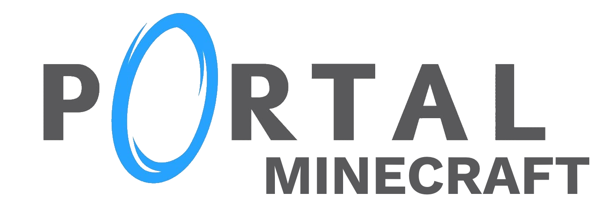
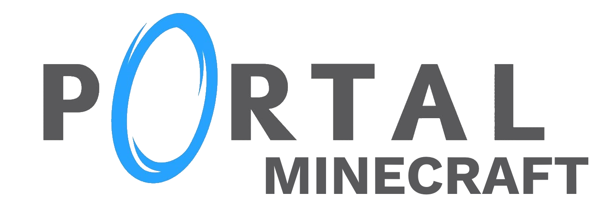
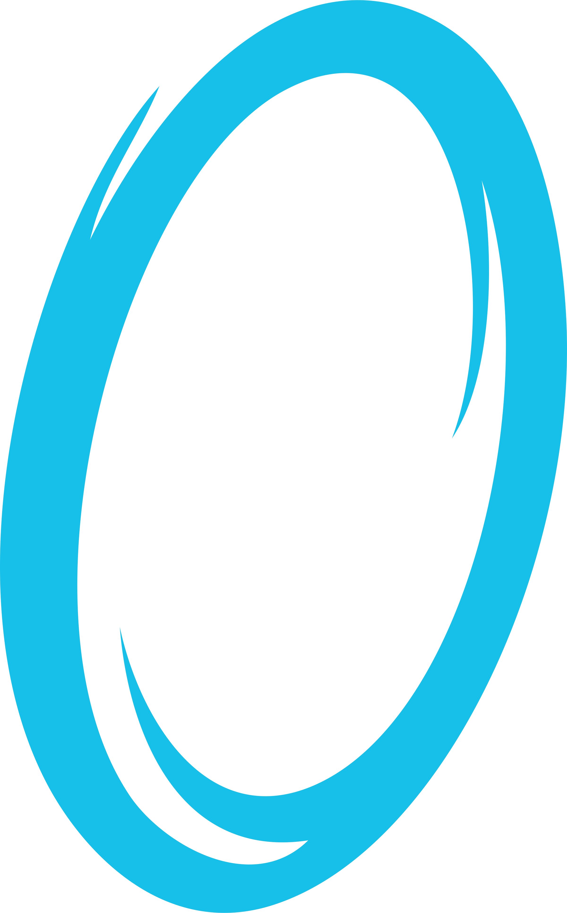

Télécharger
 



Crédits :

Portal Minecraft : ModPack et Map aventure dans le thème de Portal de Valve en 2007 , crée un portail pour vous téléporter, utiliser des gels pour courir plus vite ! Visitez une map repris de portal mis dans Minecraft ! Écouter la radio voyager jusqu’au Narrateur et désactiver le !